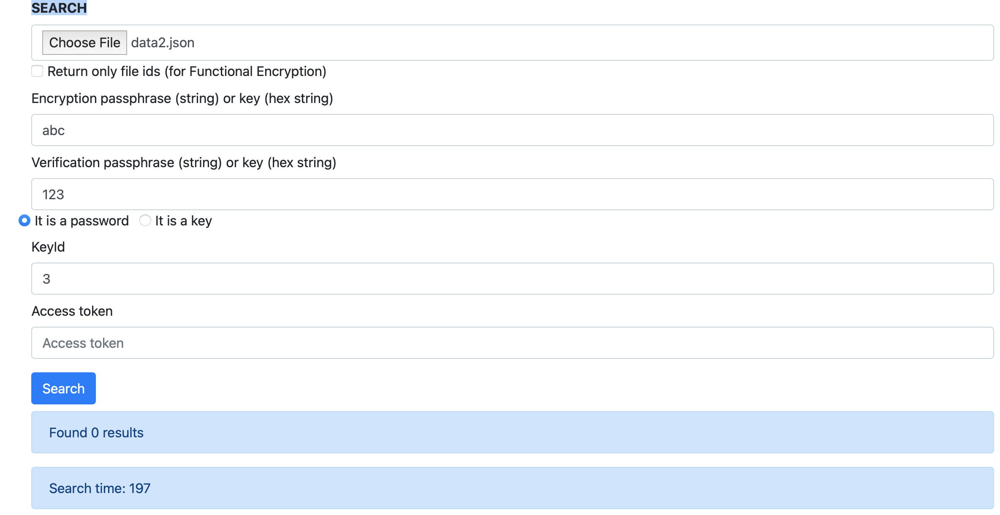

SSE Testing
After deploying the SSE service, it's time to test SSE service.
There are two ways to test it. One is manual testing and another one is automatic testing.
Manual testing
Open the browser and type the SSE_Client_IP_Address:Port number, you will reach a website called "Medical Health Record". Some figures below show the different functions in SSE service.
Function 1: SEND HASHED KEY
 According to the figure, the shared key has been uploaded to the database.
According to the figure, the shared key has been uploaded to the database.
Function 2: UPLOAD DATA
 According to the figure above, data0.json(
According to the figure above, data0.json(
{
"name": "white",
"age": 50
}
) has been submitted to the database. The details of how to write a proper json file could be reached in SSE_API_specification.pdf.
Function 3: SEARCH

According to the figure above, data2.json(
{
"keyword": "age|20"
}
) has been submitted to the database and no file (containing age=20) could be returned from the database.
Function 4: UPDATE DATA
 According to the figure above, data4.json(
According to the figure above, data4.json(
{
"name": ["white","Peter"]
}
) has been submitted to the database and the name in data0.json has been changed from "white" to "Peter".
Repeat SEARCH again
 According to the figure above, data5.json(
According to the figure above, data5.json(
{
"keyword": "name|Peter"
}
) has been submitted to the database and one result could be returned from the database. (P.S. By Function 4, the database should contain one result.)
Function 5: DELETE DATA
 According to the figure above, the file (file id = 10) has been deleted from the database.
According to the figure above, the file (file id = 10) has been deleted from the database.
Automatic testing
Jest is applied to test SSE service automatically. The details could be found in SSE_verification.
Besides, the figure below shows an example of the Jest result.